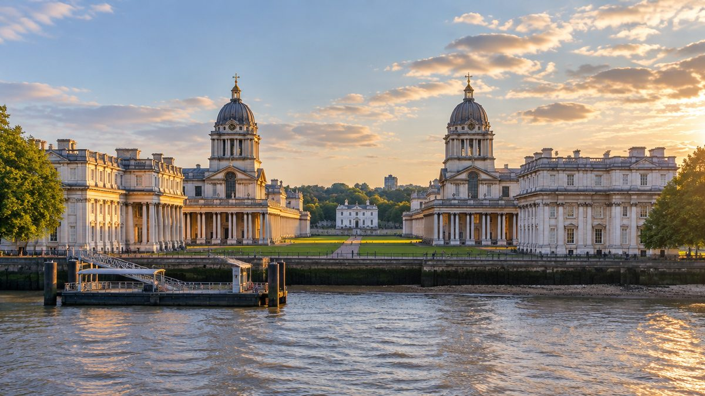
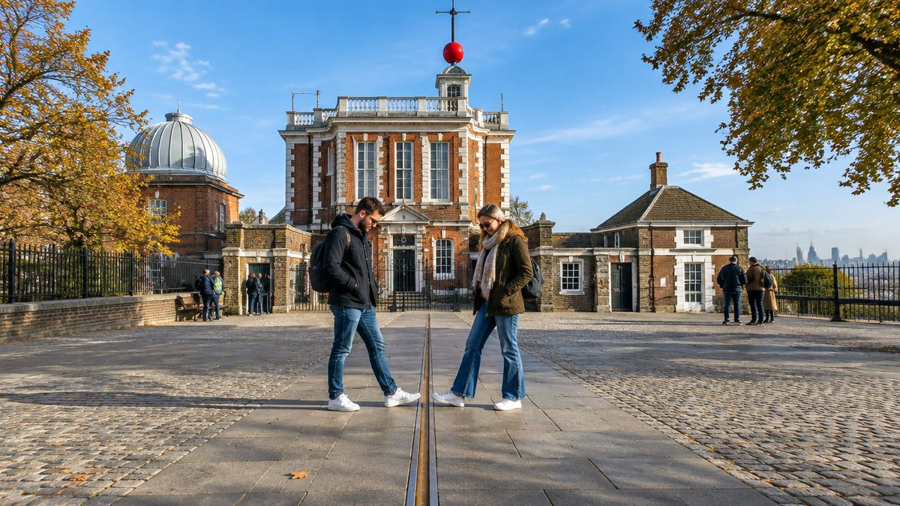
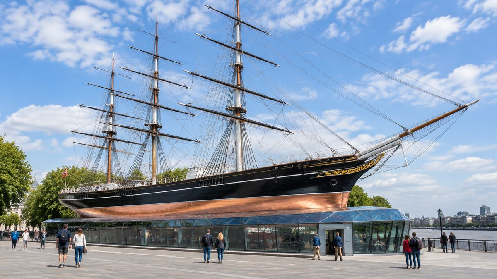
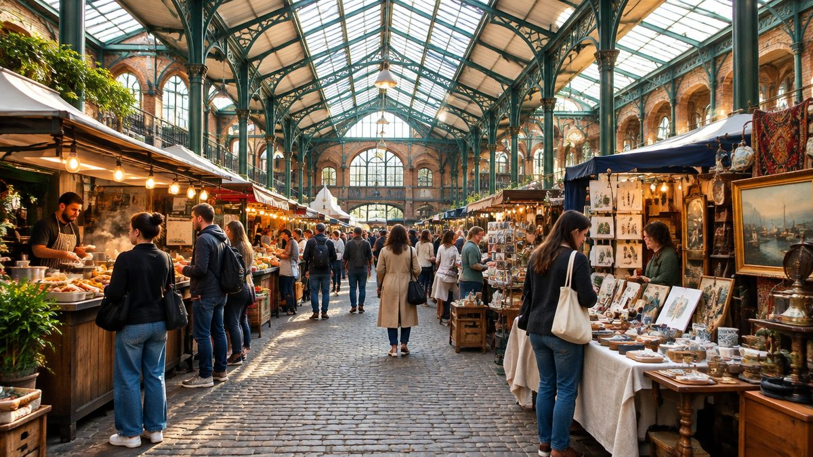
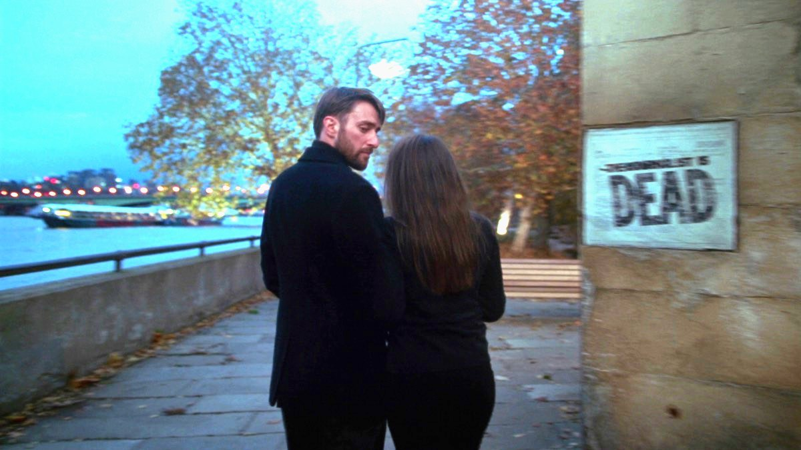

עודכן לאחרונה בספטמבר 2026
גריניץ' היא המקום היחיד בלונדון שבו אפשר לעמוד עם רגל אחת במזרח כדור הארץ ורגל שנייה במערב, ואז לרדת מהגבעה, לאכול בשוק מקורה, לעלות על ספינת מפרש מהמאה התשע עשרה, ולחזור למרכז בשיט על התמזה. זה לא עוד אזור, זה יום שלם שנבנה מעצמו, ורוב הדברים הטובים בו לא עולים כלום.
בחרו כיוון ותראו כאן את המקומות עצמם, עם מה שכדאי לדעת לפני שהולכים.
מה זה גריניץ', ולמה יום אחד שם שווה יותר מרוב האטרקציות במרכז

גריניץ' יושבת על הגדה הדרומית של התמזה, כעשרה קילומטרים במורד הנהר ממרכז לונדון, ממש מול מגדלי הזכוכית של קנרי וורף. במשך מאות שנים היא הייתה החצר האחורית של המלוכה הבריטית והבית של הצי המלכותי, וזה בדיוק מה שנשאר ממנה היום: ארמון, מכללה ימית, מצפה כוכבים, פארק מלכותי, ושכונה קטנה ונעימה שנבנתה סביבם.
הדבר שהפך את השכונה הזאת לשם עולמי הוא קו דמיוני. ב-1884 התכנסו בוושינגטון נציגים מעשרים וחמש מדינות והחליטו שקו האורך אפס של כדור הארץ יעבור בדיוק דרך מצפה הכוכבים המלכותי בגריניץ'. מאז כל מפה, כל שעון וכל מכשיר ניווט בעולם מודדים את עצמם ביחס לנקודה הזאת, שנמצאת על גבעה בפארק בדרום מזרח לונדון. ב-1997 הכריז אונסק"ו על גריניץ' הימית כאתר מורשת עולמית.
מה שחשוב לכם מכל זה פשוט. המקומות המעניינים בגריניץ' יושבים זה ליד זה במרחק הליכה של דקות, רובם בחינם, והשיטוט ביניהם עובר דרך פארק ענק, שוק מקורה ורחובות קטנים עם פאבים ובתי קפה. לא צריך רכבת תחתית בין עצירה לעצירה, ולא צריך להחליט מראש על הכל.
למי האזור הזה מתאים, ולמי פחות
מוזיאון עם אולם משחק לילדים, ספינה שמטפסים עליה, פארק ענק ומנהרה מתחת לנהר. אחד האזורים הידידותיים בעיר לילדים.
קו האפס הוא מהדברים שמספרים עליהם בבית, והשיט בחזרה מראה את כל לונדון מהמים בנסיעה אחת.
התצפית מהגבעה היא מהיפות בעיר, והיא חינמית. גרם המדרגות בבית המלכה הוא מהמקומות המצולמים בלונדון.
אפשר למלא כאן יום שלם בלי לשלם על כניסה אחת, ולשמור את הכסף לספינה או למצפה אם ממש רוצים.
ולמי זה פחות מתאים. מי שיש לו שלושה ימים בלונדון ורוצה למצות את המרכז יכול לוותר על גריניץ' בלי להצטער, היא יעד ליום החמישי ולא ליום הראשון. מי שמחפש חיי לילה, קניות רציניות או מסעדות נחשבות לא ימצא כאן הרבה, כי אחרי שש בערב העיירה נרגעת. ומי שמסתובב עם עגלה כבדה צריך לדעת שהעלייה למצפה תלולה באמת, גם אם היא קצרה.
🔭 קו האפס והמצפה, ומה באמת בתשלום

מצפה הכוכבים המלכותי יושב בראש הגבעה של פארק גריניץ', והוא המקום שבו נולדו גם קו האורך אפס וגם שעון גריניץ', הזמן שלפיו מכוונים את השעונים בכל העולם. הוא נבנה ב-1675 בהזמנת המלך צ'ארלס השני, במטרה מעשית לגמרי: לעזור לספינות הבריטיות למצוא את מיקומן בים. שלוש מאות וחמישים שנה אחר כך, זה עדיין המקום המבוקר ביותר בגריניץ'.
וכאן צריך להיות מדויקים, כי הרבה מטיילים משלמים בלי צורך או מוותרים בלי צורך.
- הגבעה, הנוף והפארק, בחינם. העלייה למצפה עוברת בפארק, והתצפית מהרחבה שליד פסל הגנרל וולף פתוחה לכולם. זה הנוף על קנרי וורף, על המכללה הימית ועל התמזה שרואים בכל תמונה של גריניץ'.
- הכניסה למצפה ולחצר קו האפס, בתשלום. הקו המפורסם עם הפליז והתמונה של רגל בכל חצי כדור נמצא בתוך החצר שדורשת כרטיס. הכרטיס כולל גם את הבניין ההיסטורי, האולם עם הטלסקופים ואת הכדור האדום על הגג שיורד כל יום בשעה אחת בדיוק.
- קטע מהקו מסומן גם מחוץ לחצר. מי שרוצה רק לעמוד על הקו ולהמשיך יכול למצוא את הסימון בשביל שמחוץ לגדר, בלי כרטיס. זה פחות מרשים, אבל זה אותו קו.
נכון לספטמבר 2026 כרטיס מבוגר למצפה עולה 24 ליש"ט, ילד בגילים ארבע עד חמש עשרה 12 ליש"ט, ומתחת לגיל ארבע בחינם. יש כרטיס יום משולב למצפה ולקאטי סארק יחד, 38 ליש"ט למבוגר ו-19 לילד, וזה החיסכון הכי הגיוני למי שמתכנן לעשות את שניהם. המצפה פתוח כל יום מעשר בבוקר עד חמש אחר הצהריים, עם כניסה אחרונה כשלושת רבעי שעה לפני הסגירה, ובחודשי הקיץ עד שש. מומלץ להזמין מראש באתר הרשמי, לא כי נגמר, אלא כי בסופי שבוע ובחגי בית ספר התור בקופה ארוך. לחיצה על שם המצפה בטקסט פותחת את המחיר המעודכן ביותר שיש לנו.
⛵ הספינה, המוזיאונים והמכללה, מה חינם ומה לא
למרגלות הגבעה, בין הנהר לפארק, יושב מתחם שלם של מבנים מלכותיים וימיים. הם קרובים זה לזה כל כך שאפשר לעבור ביניהם בדקות, ולכן השאלה היחידה היא לאן נכנסים.
| מקום | עלות | למה כדאי |
|---|---|---|
| המוזיאון הימי הלאומי | חינם | הגדול מסוגו בעולם, ועם אולם משחק לילדים עד גיל שבע |
| בית המלכה | חינם | גרם המדרגות הלולייני ואוסף ציורים, ביקור של חצי שעה |
| שטח המכללה הימית והקפלה | חינם | החצרות והעמודים שמופיעים בעשרות סרטים |
| האולם המצויר במכללה | בתשלום | תקרה ברוקית ענקית, וילדים נכנסים חינם |
| ספינת קאטי סארק | בתשלום | עולים על הסיפון ויורדים מתחת לגוף הספינה |
| מצפה הכוכבים וקו האפס | בתשלום | הקו עצמו, הטלסקופים והכדור האדום |

ספינת קאטי סארק
ספינת המפרש המהירה בעולם בזמנה, שהובילה תה מסין בשנות השבעים של המאה התשע עשרה ואחר כך צמר מאוסטרליה. היא עומדת היום על יבשה, ממש ליד תחנת הרכבת הקלה, מורמת מעל הקרקע כך שאפשר ללכת מתחת לגוף הנחושת שלה. אפשר לראות אותה מבחוץ בחינם ולצלם, ואת הסיפון, המחסנים והמעבר מתחת לגוף רואים רק עם כרטיס. נכון לספטמבר 2026 המחיר הוא 22 ליש"ט למבוגר ו-11 לילד, פתוח כל יום מעשר עד חמש, כניסה אחרונה ברבע לחמש. הביקור לוקח בערך שעה, ומדריך שמע כלול בכרטיס.
המוזיאון הימי הלאומי
הכניסה חינמית, והמוזיאון פתוח כל יום מעשר עד חמש. זה המוזיאון הימי הגדול בעולם, עם אולמות על נלסון, על קרב טרפלגר ועל ההיסטוריה של הצי הבריטי, אבל הסיבה שמשפחות מגיעות אליו היא אולם AHOY, אזור משחק ימי לילדים עד גיל שבע, ומגרש המשחקים בחוץ. תערוכות מיוחדות הן בתשלום נפרד, וכל השאר לא. שעה וחצי מספיקות למי שלא עוצר בכל ויטרינה.
בית המלכה
בית לבן ומדויק מהמאה השבע עשרה, מהמבנים הראשונים באנגליה שנבנו בסגנון הקלאסי, ומאז הוא גלריה לציורים ימיים. הדבר שבגללו נכנסים הוא גרם מדרגות הצבעונים, גרם המדרגות הלולייני הראשון בבריטניה שנושא את עצמו בלי עמוד תמיכה. מצלמים אותו מלמטה. הכניסה חינמית, פתוח כל יום מעשר עד חמש, וחצי שעה זה כל מה שצריך.
המכללה הימית המלכותית הישנה
שני הבניינים הסימטריים עם הכיפות על גדת הנהר, שתוכננו על ידי כריסטופר רן, אותו אדריכל של קתדרלת סנט פול. השטח, החצרות והקפלה פתוחים בחינם, והשטח פתוח מהבוקר המוקדם עד הלילה. בתשלום רק האולם המצויר, אולם ענק שתקרתו וקירותיו מכוסים ציור ברוקי אחד שלקח תשע עשרה שנים לצייר, והוא חוגג ב-2026 שלוש מאות שנה להשלמתו. ילדים נכנסים חינם, וכרטיס מבוגר עולה 19 ליש"ט. אם ראיתם את החצרות האלה בסרט ולא זכרתם איפה, כנראה כאן.
🛍️ השוק, האוכל, וקצת על כשרות

שוק גריניץ' הוא שוק מקורה קטן ונעים בלב העיירה, שתי דקות מהרכבת הקלה, ופועל כל יום מעשר בבוקר עד חמש וחצי אחר הצהריים. יש בו יותר ממאה ועשרים דוכנים וחנויות של מלאכת יד, תכשיטים, עתיקות ואוכל, וזה המקום הטבעי לארוחת צהריים באמצע היום. בשונה מבריק ליין או מקמדן הוא לא ענק ולא צפוף, ואפשר לעבור אותו כולו ברבע שעה. זה גם הפתרון הראשון אם מתחיל גשם.
מחוץ לשוק, ברחובות הקטנים סביבו, יש בתי קפה, פאבים ותיקים וכמה חנויות ספרים משומשים. בחודשים החמים, בערך ממרץ עד סוף נובמבר, פועל גם שוק אוכל רחוב נוסף בגני קאטי סארק ליד הנהר, עם דוכנים ומקומות ישיבה מול המים.
👨👩👧 גריניץ' עם ילדים
אם יש אזור אחד בלונדון שנבנה כאילו בשביל יום עם ילדים, זה הוא. הכל במרחק הליכה, יש פארק ענק לשחרר בו אנרגיה, ורוב הדברים לא עולים כסף.
- המוזיאון הימי. אולם AHOY בקומת הקרקע הוא אזור משחק ימי לילדים עד גיל שבע, עם ספינה לטפס עליה ומטענים להעמיס, והוא כלול בכניסה החינמית. בחוץ יש את מגרש המשחקים The Cove. זו העצירה הראשונה עם ילדים קטנים, ובכל מזג אוויר.
- קאטי סארק. הלהיט של הגילים שש ומעלה. עולים על הסיפון, יורדים למחסנים, ובסוף עומדים מתחת לגוף הספינה. זה המקום שבו שווה להשקיע את הכרטיס היחיד של היום.
- הפארק והגבעה. להתגלגל על הדשא, לרוץ במורד הגבעה, ולעמוד על הקו שמחלק את העולם לשניים. ילדים מבינים את הרעיון של קו האפס יותר טוב מרוב המבוגרים.
- מנהרת ההולכים. יורדים במעלית או במדרגות לתוך מנהרה מקומרת מתחילת המאה העשרים, הולכים כמה מאות מטרים מתחת לתמזה ויוצאים בצד השני. חינם, פתוח כל היום, והמעליות פועלות עשרים וארבע שעות. בשביל ילד זו הרפתקה, ובצד השני מחכה הנוף הכי מפורסם על גריניץ'.
- הרכבל. לא בגריניץ' עצמה אלא בחצי האי גריניץ', תחנת רכבת תחתית אחת מהמרכז. עשר דקות באוויר מעל הנהר, נכון לספטמבר 2026 שישה ליש"ט לכיוון למבוגר ושלושה לילד, ומשלמים בכרטיס בנקאי כמו בתחתית. סיום יום מושלם למשפחה, אם נשאר כוח.
🌧️ אם יורד גשם
גריניץ' היא מהאזורים הבודדים בלונדון שבהם יום גשום לא הורס את התוכנית, כי ארבע עצירות מקורות יושבות במרחק דקות זו מזו: המוזיאון הימי, בית המלכה, קאטי סארק והשוק. עושים אותן בסדר הזה, יורדים לרכבת הקלה שנמצאת ממש ליד הספינה, וחוזרים למרכז יבשים. את הפארק והנוף שומרים ליום אחר, או תופסים חלון בין הגשמים. המדריך ליום גשום בלונדון מכסה את שאר האפשרויות.
🚶 יום שלם, מוכן להליכה
המסלול הזה מתחיל ברכבת הקלה ונגמר בשיט, ולוקח בערך שש שעות בקצב נוח עם ילדים, פחות בלעדיהם. הוא בנוי כך שהכניסות בתשלום הן החלטה של הרגע: קאטי סארק בבוקר והמצפה אחר הצהריים, ואפשר לוותר על כל אחד מהם בלי לפגוע בשאר היום. הוא עובד בכל יום בשבוע, כי כאן שום דבר לא סגור ביום מסוים.
ההגיון הגיאוגרפי פשוט: מתחילים בנהר, עולים דרך השוק והמוזיאונים אל הגבעה, ויורדים חזרה לנהר דרך המנהרה. ככה כל ההליכה היא בכיוון אחד, ולא חוזרים על אותו קטע פעמיים.
יום בנוי מראש שמתחיל ליד הספינה ונגמר מול הנוף מעבר לנהר. לחיצה אחת מכניסה את כולו למסלול שלכם, ומשם אפשר לגרור, להחליף ולהוסיף ימים.
היום נוסף למסלול שלכם ואפשר להמשיך לגלוש. אם כבר בניתם מסלול קודם, הוא לא יימחק.
- 09:45ספינת קאטי סארקממש ליד התחנה, לפני שמתמלא. בתשלום, ואפשר גם רק מבחוץ
- 11:00שוק גריניץ'קפה, סיבוב קצר, ומסמנים מה יהיה הצהריים
- 11:30המוזיאון הימי הלאומיחינם. עם ילדים, אולם AHOY בקומת הקרקע
- 12:45בית המלכהחינם, חצי שעה, וגרם המדרגות מלמטה
- 13:15פארק גריניץ' והגבעהאוכל על הדשא, ואז העלייה לנוף. חינם
- 14:30מצפה הכוכבים וקו האפסבתשלום, או הקו המסומן מחוץ לגדר בחינם
- 16:00מנהרת ההולכיםמתחת לתמזה אל הנוף מעבר לנהר, ומשם השיט חזרה
פירוט מלא של היום, שעה אחר שעה
| שעה | איפה | מה עושים |
|---|---|---|
| 09:45 | ספינת קאטי סארק | יוצאים מתחנת הרכבת הקלה והספינה מולכם. מי שמשלם נכנס עכשיו, לפני הקבוצות. מי שלא, מצלם מבחוץ וממשיך. |
| 11:00 | שוק גריניץ' | שתי דקות הליכה. קפה, סיבוב בין הדוכנים, ומסמנים את דוכן הצהריים. |
| 11:30 | המוזיאון הימי הלאומי | חמש דקות הליכה. חינם. עם ילדים מתחילים באולם AHOY, בלעדיהם באולמות נלסון וטרפלגר. |
| 12:45 | בית המלכה | צמוד למוזיאון. חינם. גרם המדרגות, שתי גלריות, ויוצאים לפארק. |
| 13:15 | פארק גריניץ' והגבעה | אוכל מהשוק על הדשא, ואז העלייה לנוף ליד פסל הגנרל וולף. זה הצילום של היום. |
| 14:30 | מצפה הכוכבים | מי שמשלם נכנס לחצר קו האפס ולבניין. מי שלא, עומד על הקו המסומן בחוץ. יורדים בחזרה דרך הפארק. |
| 16:00 | מנהרת ההולכים | הביתן עם הכיפה ליד הספינה. עוברים מתחת לנהר, עולים בצד השני לנוף הקלאסי, וחוזרים. מהמזח שליד הספינה עולים על השיט למרכז. |
חלופות ותוספות
- האולם המצויר במכללה הימית, במקום המצפה למי שמעדיף אמנות על אסטרונומיה. באותו מתחם, ליד המוזיאון.
- הרכבל, במקום המנהרה. תחנת רכבת תחתית אחת מהמרכז, ואז השיט חזרה ממזח נורת' גריניץ' במקום ממזח גריניץ'.
- קנרי וורף, למי שסיים מוקדם. עוברים במנהרה, ממשיכים ברכבת הקלה שתי תחנות, ומסתובבים בין המגדלים ובקניונים המקורים.
🚇 איך מגיעים, ולמה כדאי לחזור במים

גריניץ' יושבת באזורי תחבורה 2 ו-3, כלומר עדיין בתוך תקרת התשלום היומית הרגילה, ואין תוספת מיוחדת. יש שלוש דרכים להגיע, ולכל אחת יש תפקיד אחר ביום.
- הרכבת הקלה DLR, הדרך המומלצת להגיע. יורדים בתחנת Cutty Sark, שנמצאת ממש ליד הספינה והשוק. מתחנת Bank במרכז הסיטי הנסיעה היא כעשרים דקות, ומתחנת Tower Gateway ליד מצודת לונדון כעשרים וחמש. הרכבת נוסעת בלי נהג, וילדים אוהבים לשבת בחלון הקדמי. התחנה נפתחה מחדש במרץ 2026 אחרי החלפת כל המדרגות הנעות, והיא נגישה במלואה עם מעלית.
- רכבת רגילה מלונדון ברידג'. רכבות Southeastern מגיעות לתחנת Greenwich בכשמונה עד עשר דקות, וזו הדרך המהירה למי שלן בגדה הדרומית. התחנה רחוקה כמה דקות הליכה יותר מהמרכז ההיסטורי מאשר תחנת הרכבת הקלה.
- השיט על התמזה, הדרך המומלצת לחזור. סירות Uber Boat של Thames Clippers בקו RB1 עוצרות במזח גריניץ', ליד הספינה. הנסיעה ממזח המצודה לגריניץ' היא כעשרים ושלוש דקות, וממזחי וסטמינסטר ולונדון איי ארוכה יותר. משלמים בכרטיס בנקאי או באויסטר בטעינה, אבל שימו לב, השיט לא נכלל בתקרת התשלום היומית של התחתית, ומחיר בודד למבוגר מתחיל בסביבות שישה ליש"ט וחצי ועולה בשעות העומס. עדיין, לונדון כולה עוברת לידכם מהמים, עם גשר המגדלים באמצע, וזה הסיום הנכון ליום הזה.
הקו הסגול, אליזבת ליין, לא מגיע לגריניץ' עצמה. מי שמגיע איתו מהית'רו או מהמערב יורד ב-Canary Wharf ועובר לרכבת הקלה, שלוש תחנות. המדריך לקווי התחתית מסביר איזה קו עושה מה, ומדריך התחבורה מסביר את תקרות התשלום.
מה משלבים עם גריניץ' באותו יום
- קנרי וורף, מעבר לנהר. עוברים במנהרה ונוסעים שתי תחנות ברכבת הקלה. מגדלים, קניון מקורה ומזח לשיט חזרה.
- מצודת לונדון וגשר המגדלים, בדרך חזרה. השיט עוצר במזח המצודה, ואפשר לרדת שם לשעת ערב על הגשר.
- הרכבל והאו טו, תחנת רכבת תחתית אחת. מתאים כסיום למשפחות עם כוח.
🔗 איך גריניץ' משתלבת בטיול שלכם
הכלל שלנו פשוט. גריניץ' היא היום האחרון או הלפני אחרון, לא הראשון. ביום הראשון רוצים את הביג בן ואת הארמון, וגריניץ' היא בדיוק היום שבו כבר ראיתם את כל זה ומוכנים ליום איטי יותר עם נוף.
- בטיול של שלושה ימים, גריניץ' לא נכנסת, ולא צריך להצטער. מסלול שלושת הימים מסביר מה כן.
- בטיול של חמישה ימים, היא היום החמישי. מסלול חמשת הימים בנוי בדיוק ככה, עם השיט בחזרה כסיום לטיול כולו.
- בטיול של שבעה ימים, יש לה יום משלה עם זמן לכל הכניסות, ומסלול שבעת הימים משלב אותה עם קנרי וורף.
- בטיול חוזר ללונדון, זה אחד המקומות הראשונים שכדאי להשלים אם פספסתם בפעם הקודמת.
שאלות שחוזרות על עצמן
כמה זמן צריך בגריניץ'?
יום שלם בקצב נוח. מי שמוותר על הכניסות בתשלום ומסתפק בפארק, בשוק ובמוזיאונים החינמיים מסיים בחצי יום, ומי שעולה גם לקאטי סארק וגם למצפה מגיע לערב.
כמה עולה יום בגריניץ'?
הפארק, התצפית מהגבעה, השוק, המוזיאון הימי, בית המלכה, שטח המכללה הימית ומנהרת ההולכים הם בחינם. בתשלום רק מצפה הכוכבים עם חצר קו האפס, ספינת קאטי סארק, האולם המצויר והרכבל. נכון לספטמבר 2026 כרטיס מבוגר למצפה הוא 24 ליש"ט ולקאטי סארק 22 ליש"ט, ויש כרטיס משולב לשניהם שחוסך כשמונה ליש"ט.
מה עדיף, רכבת קלה או שיט?
לבוא ברכבת הקלה, כי היא מהירה, זולה ונכללת בתקרת התשלום היומית, ולחזור בשיט, כי הנסיעה על הנהר היא חלק מהחוויה. על השיט משלמים בנפרד.
האם גריניץ' מתאימה לילדים?
מאוד. אולם המשחק במוזיאון הימי, מגרש המשחקים, הספינה, הפארק והמנהרה מתחת לנהר עובדים לכל גיל. רק העלייה לגבעה עם עגלה דורשת נשימה ארוכה.